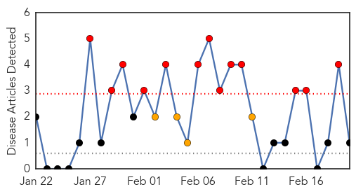
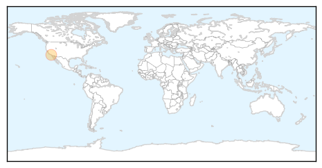
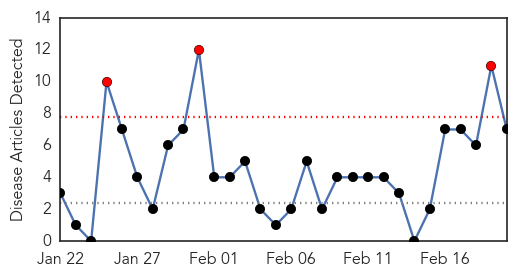
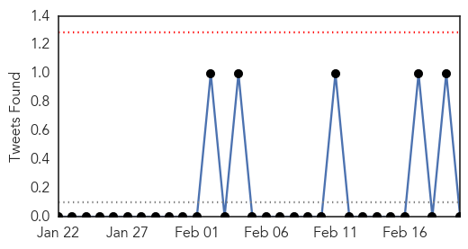
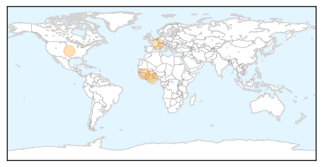
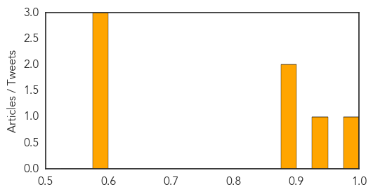

Pertussis
30-Day Web Trend
13 alerts, 4 warnings

30-Day Twitter Trend
0 alerts, 0 warnings

Article Locations
Article Confidences

Top Articles:
Top Tweets:
-
No tweets found for Feb 20, 2015
Dengue Fever
30-Day Web Trend
3 alerts, 0 warnings

30-Day Twitter Trend
0 alerts, 0 warnings

Article Locations
Article Confidences
Top Articles:
- 0.992
- Government hospital opens ward for dengue patients
- 0.946
- These Deadly Diseases Impact More Than 1 Billion Of World's Poorest People But Are Mostly Ignored
- 0.894
- Nations urged to fight neglected tropical diseases
- 0.889
- Nations urged to fight neglected tropical diseases
- 0.598
- WHO asks countries to invest more to tackle Neglected Tropical Diseases
- 0.598
- WHO urges governments to increase investment to tackle NTDs
- 0.595
- WHO urges governments to increase investment to tackle NTDs
Top Tweets:
-
No tweets found for Feb 20, 2015